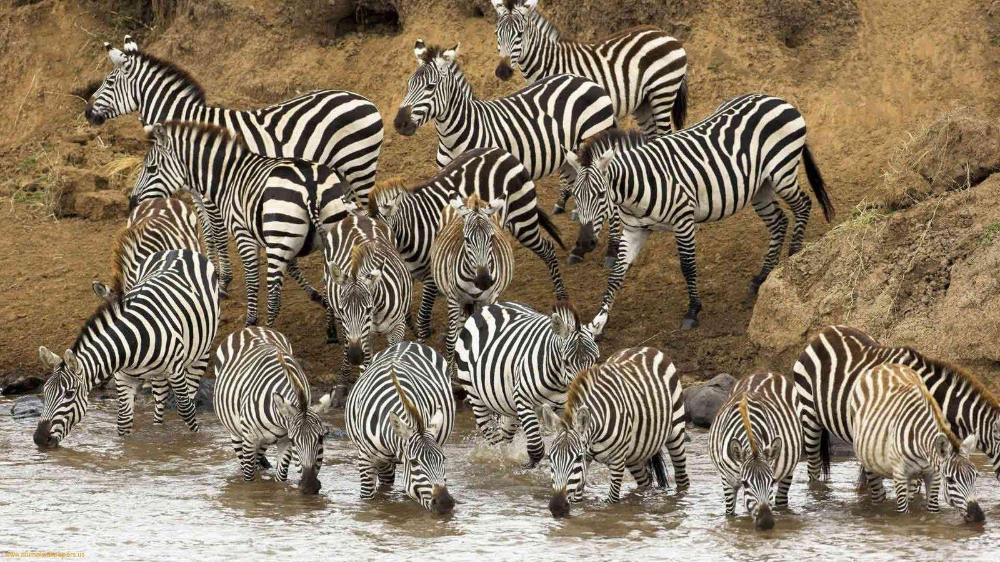
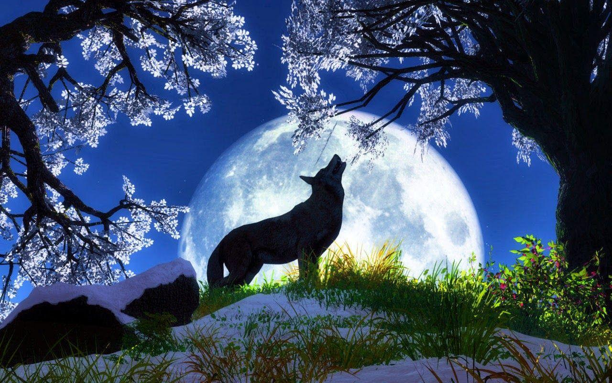
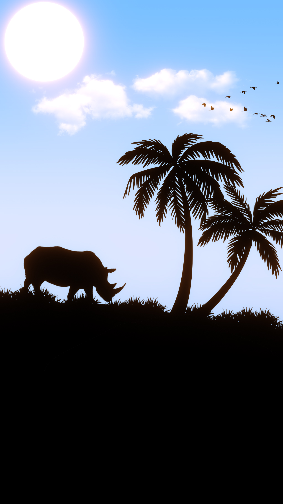
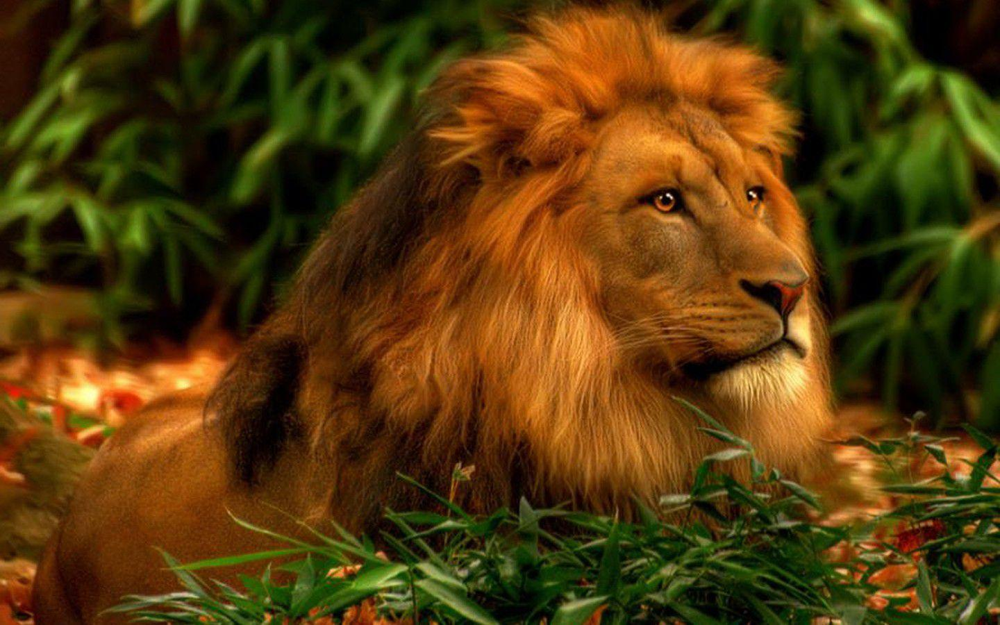

The king of the Jungle
lion is a most powerful animal. Lion lives in a group moderated by allied female lions.
This animal has royal existence into jungles that resembles to the lifestyle of a king.
The lion is a feral and wild mammal with a splendid emergence and majestic lifestyle. The male lions have graceful curls and a flowing mane. They are called to be the ‘king of the animals’, in support of their glamour in look and poise of character. Lions never hunt other mammals unless they are ravenous. They are not as brutal as a tiger.

The Gray Wolf
Wolves are legendary because of their spine-tingling howl, which they use to communicate. A lone wolf howls to attract the attention of his pack, while communal howls may send territorial messages from one pack to another. Some howls are confrontational. Much like barking domestic dogs, wolves may simply begin howling because a nearby wolf has already begun.

Black Rhino
Black rhinos are the smaller of the two African rhino species. The most notable difference between white and black rhinos are their hooked upper lip. This distinguishes them from the white rhino, which has a square lip. Black rhinos are browsers rather than grazers, and their pointed lip helps them feed on leaves from bushes and trees. They have two horns, and occasionally a third, small posterior horn.

Horse on The Cliff
Horse, a hoofed herbivorous mammal of the family Equidae. It comprises a single species, Equus caballus, whose numerous varieties are called breeds. Before the advent of mechanized vehicles, the horse was widely used as a draft animal, and riding on horseback was one of the chief means of transportation.
